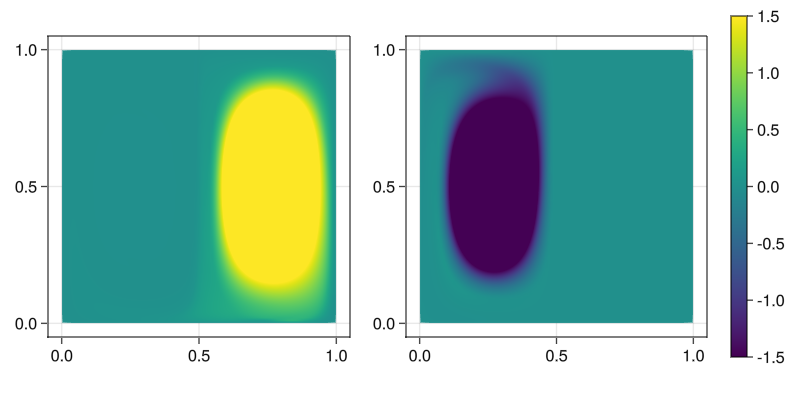

First two eigenfunctions on the unit square
We calculate the first two eigenfunctions of $\Delta^D_p$ on the unit square $[0,1]^2$ for the transitory double gyre and $p=1.5$:
using DynamicPLaplacian, Gridap, LinearAlgebra
const DPL = DynamicPLaplacian
p = 1.5
flow = rot_gyre_flow
# create context
gridap_context = CartesianGridapContext((0,1,0,1), (100,100))
U = gridap_context.U
lmm_context = dynamic_LMMContext(p, flow, gridap_context, diffmethod=:forwarddiff)
results = get_dyn_plap_eigs(2, flow,
lmm_context,
verbose=true,
diffmethod=:forwarddiff,
max_it = 10000)For plotting we use GridapMakie:
using Gridap.CellData, GridapMakie, GLMakie, FileIO
model = simplexify(gridap_context.Ω.model)
Ω = Triangulation(model)
U_plot = FESpace(model, ReferenceFE(lagrangian, Float64, 1))
u1 = interpolate(Interpolable(FEFunction(U, results[1].u)), U_plot)
u2 = interpolate(Interpolable(FEFunction(U, results[2].u)), U_plot)
# plot
fig = Figure(resolution=(800,400))
ax = Axis(fig[1, 1], aspect = 1)
ax = Axis(fig[1, 2], aspect = 1)
pl1 = plot!(fig[1,1], Ω, u1, colorrange=(-1.5,1.5), colormap=:viridis)
pl2 = plot!(fig[1,2], Ω, u2, colorrange=(-1.5,1.5), colormap=:viridis)
Colorbar(fig[1,3], pl1)